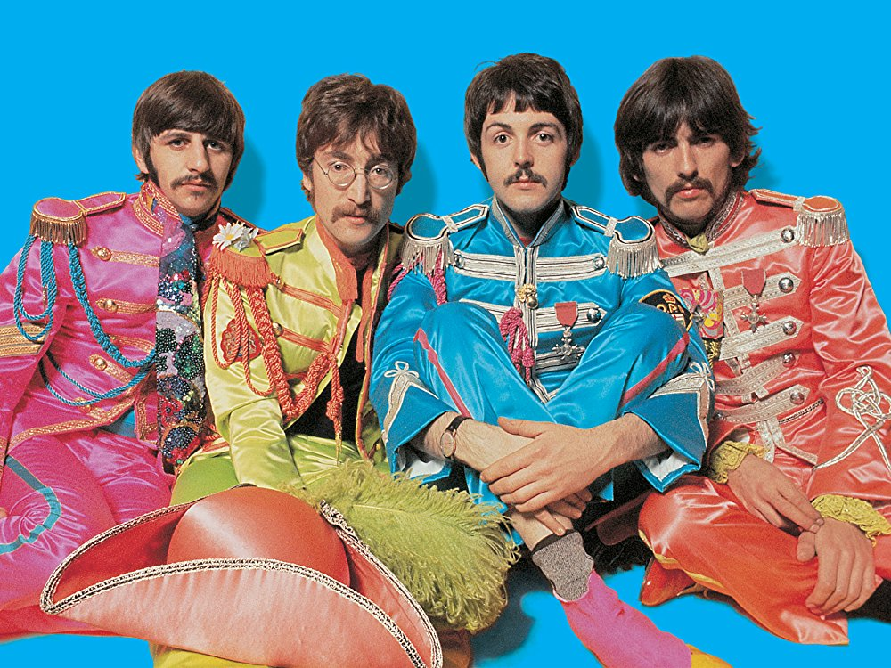
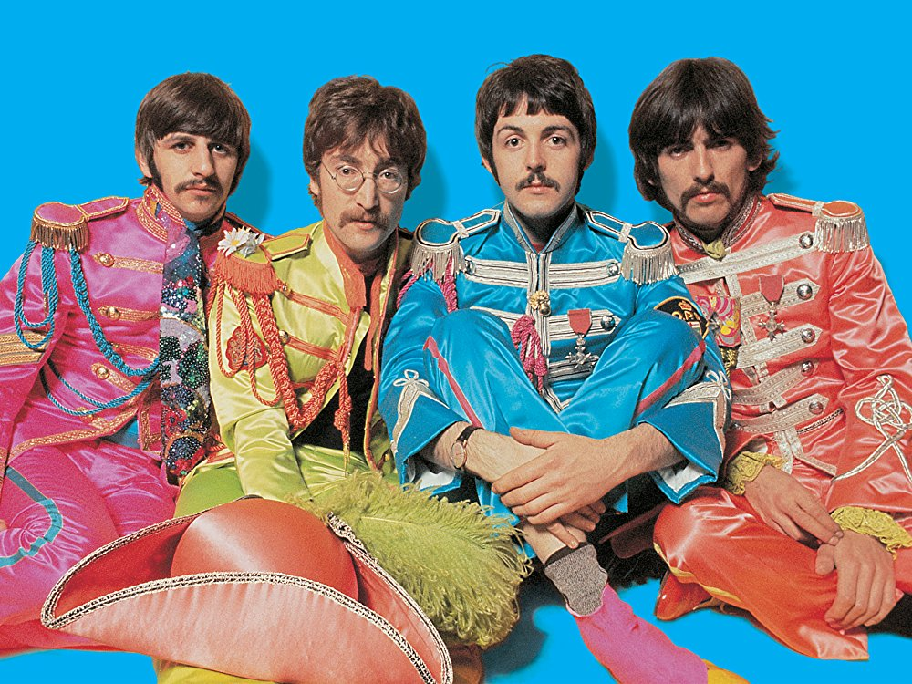
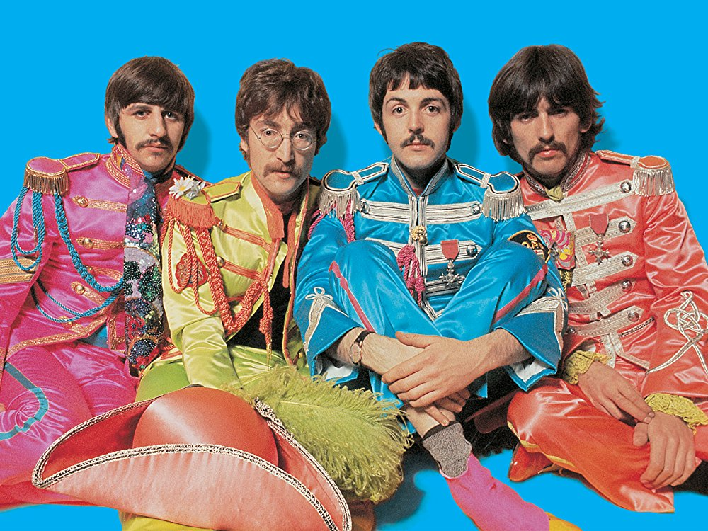

Bem-vindo ao nosso site, um guia completo dos estilos musicais mais populares!
Aqui,
exploraremos uma ampla gama de gêneros, incluindo o vibrante mundo do rap, o cativante funk, a música
pop contagiante, o estilo alternativo do indie, a energia inconfundível do rock e o poderoso som do
metal.
O rap, um estilo originário das comunidades urbanas, é conhecido por suas letras impactantes e ritmo
contagiante. Entre os principais representantes desse gênero estão Kendrick Lamar, com sua habilidade
lírica e mensagens sociais poderosas, e Tupac, considerado o melhor rapper de todos os tempos por
muitos.
O funk, com suas batidas irresistíveis e grooves contagiantes, é um estilo que faz qualquer pessoa se
mexer. Um dos ícones desse gênero é James Brown, conhecido como o "Padrinho do Soul", cuja música
influenciou gerações. Além disso, temos Rick James, um artista que incorpora elementos do
funk em suas canções cheias de energia e dançantes.
Na música pop, encontramos melodias envolventes e refrãos cativantes que conquistam as paradas de
sucesso. Nesse cenário, destacam-se artistas como Taylor Swift, com sua habilidade de compor letras
pessoais e emocionantes, e Rihanna, um fenômeno pop que se reinventou ao longo dos anos e continua
a conquistar fãs em todo o mundo.
No universo do indie, encontramos uma cena musical alternativa, com artistas que exploram sons únicos e
experimentais. Um dos nomes importantes nesse cenário é Tame Impala, um projeto musical liderado por
Kevin Parker, que mistura psicodelia, rock e eletrônica de forma inovadora. Além disso, temos a banda
Arctic Monkeys, cujas composições inteligentes e energia cativante os tornaram uma referência no indie
rock.
Já o rock, um dos estilos mais icônicos da história da música, abrange uma ampla variedade de subgêneros
e influenciou inúmeras bandas ao longo dos anos. Entre os grandes nomes estão os lendários Rolling
Stones, conhecidos por suas performances carismáticas e atemporais, e a banda Foo Fighters, liderada por
Dave Grohl, que combina a energia do punk com melodias marcantes e letras poderosas.
Por fim, temos o metal, um gênero que se destaca pela sua sonoridade intensa e pesada. Bandas como Iron
Maiden, com suas composições épicas e solos de guitarra virtuosos, e Metallica, uma das maiores
referências do thrash metal, conquistaram legiões de fãs ao redor do mundo com sua energia implacável e
performances enérgicas.
Explore cada um desses estilos musicais e mergulhe na diversidade e criatividade de cada um deles. Aqui,
você encontrará informações e curiosidades sobre esses gêneros e suas principais estrelas, além de
descobrir novos talentos e se envolver com a magia da música.
RAP
Introdução
O Rap é um estilo de música que surgiu nas comunidades afro-americanas e latinas nos
Estados Unidos, na
década de 1970. Caracterizado por um ritmo marcante, letras rimadas e faladas com velocidade, e uma
forte
presença do DJ como parte integrante da música, o Rap logo se espalhou para outras partes do mundo e se
tornou um dos gêneros mais populares da música contemporânea.
Além de sua importância cultural e musical, o Rap também se tornou um meio de expressão para as
comunidades
marginalizadas e oprimidas, abordando temas como racismo, desigualdade social, violência, política e
outros
assuntos importantes para a juventude. Desde então, o Rap se diversificou em várias vertentes, como o
Gangsta Rap, o Conscious Rap, o Trap, o Mumble Rap, entre outros, cada um com suas próprias
características
e influências.
Origem
O Rap surgiu no final dos anos 1960 e início dos anos 1970, nas comunidades
afro-americanas e latinas do
Bronx, em Nova York, nos Estados Unidos. Na época, o Hip Hop era um movimento cultural que englobava
diferentes expressões artísticas, como a dança, a arte de rua (graffiti) e a música. O Rap surgiu como
uma
forma de improvisação falada em cima de uma base musical, com a intenção de animar as festas de rua e os
bailes de discoteca.
O DJ Kool Herc é considerado um dos pioneiros do Rap, sendo creditado como o criador do "breakbeat", uma
técnica em que o DJ manipulava o disco para repetir um trecho instrumental, criando uma base para a
improvisação vocal. Outros DJs importantes no surgimento do Rap incluem Grandmaster Flash, Afrika
Bambaataa
e DJ Hollywood.
As primeiras gravações de Rap surgiram em meados da década de 1970, com artistas como The Sugarhill
Gang,
Kurtis Blow e Grandmaster Flash & The Furious Five, tornando-se cada vez mais populares na década
seguinte.
Com o passar dos anos, o Rap se diversificou em vários subgêneros e se espalhou para outras partes do
mundo,
se tornando um dos estilos musicais mais influentes e populares da atualidade.
Principais Cantores
Existem muitos cantores e grupos importantes no mundo do Rap, cada um com sua
própria contribuição para a
evolução e popularização do gênero. Alguns dos maiores cantores de Rap incluem:
Tupac Shakur: Talvez o ícone mais emblemático do Rap, Tupac é considerado por muitos como um dos
maiores
rappers de todos os tempos, com letras poderosas que abordavam temas sociais, políticos e
pessoais.
The Notorious B.I.G.: Conhecido como Biggie, é outro nome lendário do Rap, com letras
inteligentes e
rimas impecáveis. Sua rivalidade com Tupac e sua morte prematura contribuíram para sua fama e
status
de
lenda.
Jay-Z: Com uma carreira que abrange mais de 20 anos, Jay-Z é um dos artistas mais bem-sucedidos
do
Rap,
com letras que abordam questões políticas, sociais e raciais.
Kanye West, um visionário da música e do rap, é conhecido por sua genialidade artística e
habilidade de se reinventar a cada álbum. Suas composições ousadas e letras impactantes refletem
sua busca incessante por inovação, estabelecendo-o como um dos artistas mais influentes e
controversos de sua geração.
Eminem: Conhecido por sua técnica de rap única e letras controversas, Eminem se tornou um dos
rappers
mais populares e influentes da história.
Kendrick Lamar: Considerado um dos rappers mais importantes da nova geração, Kendrick é
conhecido
por
suas letras profundas e reflexivas, que abordam questões raciais e sociais.
Funk
Introdução
O Funk é um estilo musical vibrante e animado que tem suas raízes na cultura
afro-americana dos Estados
Unidos. Com uma história que remonta à década de 1960, o Funk é uma mistura de diversos gêneros
musicais,
incluindo o R&B, o soul, o jazz e o gospel.
O Funk é conhecido por suas batidas pulsantes, linhas de baixo cativantes e arranjos complexos de
metais. As
letras muitas vezes abordam temas de festa, amor e sexualidade, além de temas sociais e políticos.
Grandes
nomes como James Brown, George Clinton e Parliament-Funkadelic foram pioneiros na evolução e
popularização
do Funk.
O Funk é um estilo musical que se espalhou por todo o mundo, influenciando outros gêneros musicais e
culturas. No Brasil, o Funk carioca é um subgênero do Funk que ganhou destaque nas décadas de 1990 e
2000,
com uma batida única e letras que retratam a vida nas favelas e a cultura popular. O Funk é uma parte
importante da música popular e continua a evoluir e influenciar a cultura musical contemporânea.
Origem
O Funk é um estilo musical que teve origem nos Estados Unidos, mais especificamente na
década de 1960.
Surgiu
como uma fusão de diversos gêneros musicais afro-americanos, como o R&B (Rhythm and Blues), o soul, o
jazz e
o gospel.
A cidade de Nova Orleans, no estado da Louisiana, é frequentemente citada como o berço do Funk. Músicos
como
James Brown, considerado o "Padrinho do Funk", e sua banda, The J.B.'s, foram fundamentais para o
desenvolvimento e popularização desse estilo. James Brown é conhecido por sua abordagem rítmica
inovadora,
enfatizando o groove, os ritmos sincopados e as linhas de baixo proeminentes, elementos-chave do Funk.
Ao longo das décadas seguintes, o Funk se espalhou por todo o país e se tornou um movimento cultural
importante. Artistas como George Clinton e seu grupo Parliament-Funkadelic, Sly and the Family Stone e
Earth, Wind & Fire também foram pioneiros do Funk, trazendo novas ideias sonoras e abrindo caminho para
a
fusão com outros gêneros, como o rock e a música eletrônica.
O Funk se destaca por suas batidas contagiantes, linhas de baixo pulsantes, arranjos complexos de metais
e
uma abordagem enérgica ao canto. Suas letras muitas vezes abordam temas de festa, liberdade, consciência
social e empoderamento. O Funk exerceu uma grande influência na música popular, sendo uma base para o
desenvolvimento de estilos como o hip-hop, o R&B contemporâneo e até mesmo o pop.
Principais Cantores
O Funk tem uma grande variedade de artistas e bandas que contribuíram para o
desenvolvimento e
popularização
do estilo ao longo das décadas. Alguns dos principais cantores de Funk incluem:
James Brown: Conhecido como o "Padrinho do Funk", James Brown é um dos artistas mais importantes
e
influentes do Funk. Com sua abordagem rítmica inovadora e letras poderosas, ele ajudou a definir
o
som e
o estilo do Funk.
George Clinton: Como líder do Parliament-Funkadelic, George Clinton foi fundamental para a
fusão do
Funk com o rock, o soul e a música eletrônica. Com sua personalidade excêntrica e letras
imaginativas,
ele se tornou um dos artistas mais reconhecidos do Funk.
Sly Stone: Sly and the Family Stone foram pioneiros na incorporação de elementos de rock e soul
ao
Funk,
criando um som único e inovador. Sly Stone é conhecido por sua abordagem criativa e suas letras
inspiradoras.
Bootsy Collins: Como baixista do Parliament-Funkadelic, Bootsy Collins é considerado um dos
maiores
músicos de Funk de todos os tempos. Sua técnica de baixo inovadora e estilo extravagante
tornaram-no
uma
lenda do Funk.
Rick James: Com uma mistura de Funk, soul e rock, Rick James teve vários sucessos nos anos 80,
incluindo
"Super Freak". Seu estilo exuberante e letras provocativas fizeram dele um dos mais populares
artistas
do Funk.
Pop
Introdução
O pop é um estilo musical que se destaca por sua popularidade e apelo comercial.
Originado nas décadas
de 1950 e 1960, o pop é conhecido por suas melodias cativantes, ritmos contagiantes e letras geralmente
voltadas para temas românticos, festivos ou até mesmo reflexivos. É um gênero que abrange uma ampla gama
de artistas e subgêneros ao longo dos anos, desde os ícones como Michael Jackson e Madonna até os
artistas contemporâneos como Taylor Swift e Justin Bieber. O pop continua a evoluir e se reinventar,
incorporando influências de outros estilos musicais e se adaptando às tendências da indústria da música.
Origem
A origem do pop remonta aos anos 1950, quando surgiram artistas como Elvis Presley e Chuck Berry, que
combinavam elementos do rock 'n' roll com influências do R&B (rhythm and blues). No entanto, foi nos
anos
1960 que o gênero realmente começou a tomar forma, com o surgimento dos Beatles e sua influência no
cenário
musical. Com suas canções enérgicas e letras cativantes, os Beatles se tornaram os ícones do pop daquela
época.
Ao longo dos anos, o pop evoluiu e se adaptou às tendências e tecnologias musicais, incorporando
elementos
do funk, soul, disco, eletrônica e hip-hop. Artistas como Michael Jackson, Madonna e Prince se
destacaram
nos anos 1980, trazendo uma nova dimensão ao gênero com performances icônicas e músicas que se tornaram
hinos da cultura pop.
Nas décadas seguintes, o pop continuou a evoluir e a revelar talentos extraordinários. Surgiram artistas
como Britney Spears, Beyoncé, Rihanna e Lady Gaga, que se tornaram ícones da música pop contemporânea.
Suas
músicas empolgantes, coreografias elaboradas e imagens marcantes contribuíram para a popularização do
estilo
musical.
Além dos artistas mencionados, muitos outros contribuíram para a riqueza do universo pop. Taylor Swift,
Justin Timberlake, Katy Perry, Ariana Grande, Ed Sheeran e Bruno Mars são apenas alguns exemplos de
cantores
e cantoras que têm emplacado sucessos nas paradas de todo o mundo. Suas músicas não apenas dominam as
rádios, mas também se tornam virais nas redes sociais, impulsionadas pela paixão dos fãs e pela
capacidade
de se conectarem emocionalmente com o público.
As principais características do pop são suas melodias cativantes, letras muitas vezes românticas ou
relacionadas ao cotidiano, e produções musicais sofisticadas. Os arranjos são cuidadosamente elaborados,
com
o uso de sintetizadores, baterias eletrônicas e outros recursos tecnológicos para criar um som moderno e
envolvente. O pop também tem uma forte ligação com a cultura visual, incorporando videoclipes elaborados
e
performances ao vivo que capturam a atenção do público.
Em suma, o estilo musical pop conquistou seu lugar na cultura popular como um gênero capaz de unir
pessoas,
transcender barreiras culturais e criar momentos memoráveis. Com sua energia contagiante e refrões
cativantes, o pop continua a evoluir e a influenciar a música contemporânea, demonstrando seu poder de
se
reinventar e se manter como um dos estilos musicais mais apreciados em todo o mundo.
Principais Cantores
O estilo musical pop tem sido abraçado por uma infinidade de cantores e
cantoras talentosos que deixaram
sua
marca na história da música. Aqui estão alguns dos principais nomes que se destacaram ao longo dos
anos:
Michael Jackson: Conhecido como o Rei do Pop, Michael Jackson revolucionou o gênero com sua
presença
de
palco impressionante, coreografias icônicas e vocais poderosos. Ele lançou sucessos atemporais
como
"Thriller", "Billie Jean" e "Beat It".
Madonna: A Rainha do Pop, Madonna é uma das artistas mais influentes e bem-sucedidas da história
da
música. Ela combinou música pop com moda, provocação e empoderamento feminino, lançando hits
como
"Like
a Virgin", "Material Girl" e "Vogue".
Beyoncé: Com sua voz poderosa e presença magnética no palco, Beyoncé se tornou uma das artistas
mais
celebradas da atualidade. Ela é conhecida por sucessos como "Single Ladies (Put a Ring on It)",
"Crazy
in Love" e "Formation".
Rihanna: Com sua voz única e estilo versátil, Rihanna se destacou na cena pop com sua abordagem
ousada e
inovadora. Ela lançou hits como "Umbrella", "Diamonds" e "We Found Love".
Taylor Swift: Considerada uma das cantoras e compositoras mais influentes da atualidade, Taylor
Swift
começou no country pop e migrou para o pop mainstream com grande sucesso. Suas músicas
confessionais
e
pessoais, como "Love Story", "Shake It Off" e "Blank Space", conquistaram uma base de fãs leais.
Indie
Introdução
O indie, abreviação de "independente", é um gênero musical que se caracteriza pela
sua independência em
relação às grandes gravadoras e à corrente musical comercial dominante. Surgido nas décadas de 1980 e
1990 como uma alternativa ao mainstream, o indie valoriza a autenticidade, a criatividade e a
originalidade artística. Os artistas indie são frequentemente associados a um som mais experimental e
fora dos padrões, explorando uma variedade de estilos que vão desde o indie rock e indie pop até o folk,
eletrônica e outros gêneros. O indie também é conhecido por suas letras introspectivas e por ser uma
plataforma para artistas emergentes e independentes que buscam expressar sua visão única e genuína da
música.
Origem
A origem do indie remonta à década de 1980, quando bandas independentes começaram a
emergir como uma
alternativa ao cenário dominado pelas grandes gravadoras. Grupos como The Smiths, Sonic Youth, Pixies e
R.E.M. foram pioneiros em definir o som e a atitude do indie. Essas bandas ganharam seguidores leais e
estabeleceram uma estética sonora distintiva que combinava elementos do rock alternativo, pós-punk e
outras
influências diversas.
Uma das características mais marcantes do indie é a valorização da autenticidade e da originalidade
artística. Os artistas indie tendem a produzir suas próprias músicas, gravar em estúdios independentes e
buscar uma conexão mais direta com seu público. Essa abordagem permite uma experimentação criativa maior
e o
desenvolvimento de um som único para cada artista ou banda.
Dentro do cenário indie, podemos encontrar uma grande variedade de estilos musicais, desde o indie rock
mais
enérgico até o dream pop etéreo, passando pelo folk, eletrônico, lo-fi e outros gêneros diversos. Essa
diversidade é refletida na ampla gama de cantores e bandas que se destacam no indie.
Quando se trata dos melhores cantores indie, é difícil fazer uma lista definitiva, pois o indie é
caracterizado por um espírito colaborativo e muitos artistas trabalham em projetos conjuntos ou se
envolvem
em parcerias. No entanto, alguns nomes se destacaram ao longo dos anos. Cantoras como Feist, Lana Del
Rey,
Florence Welch (Florence + The Machine) e Jenny Lewis são conhecidas por suas vozes cativantes e pela
abordagem única em suas composições.
No que diz respeito às melhores músicas indie, novamente é uma tarefa desafiadora escolher apenas
algumas,
pois a música indie é diversa e há uma abundância de faixas notáveis. No entanto, podemos mencionar
algumas
que tiveram um impacto significativo e que são amplamente aclamadas. Entre elas, estão "Flume" do Bon
Iver,
"Maps" do Yeah Yeah Yeahs, "Such Great Heights" do The Postal Service, "Rebellion (Lies)" do Arcade Fire
e
"Two Weeks" do Grizzly Bear.
No entanto, é importante ressaltar que a música indie está em constante evolução, e novos artistas e
faixas
estão surgindo constantemente. A beleza do indie reside na sua capacidade de se reinventar e explorar
novos
horizontes sonoros, mantendo seu espírito independente e autêntico. O estilo musical indie continua a
desafiar as convenções e a encantar os ouvintes com suas melodias envolventes, letras introspectivas e
uma
abordagem artística única.
Principais Cantores
O Indie tem uma grande variedade de artistas e bandas que contribuíram para o
desenvolvimento e popularização do estilo ao longo das décadas. Alguns dos principais cantores de
Indie
incluem:
Arctic Monkeys, uma banda de indie rock aclamada mundialmente, cativa os ouvintes com suas
composições inteligentes, energia contagiante e letras marcantes.
Billie Eilish: Com sua voz suave e distintiva, suas composições profundas e sua estética única,
Billie
Eilish conquistou um enorme sucesso em um curto período de tempo.
Tame Impala, um projeto musical liderado por Kevin Parker, transcende fronteiras com sua
abordagem
única que mescla psicodelia, rock e elementos eletrônicos, transportando os ouvintes para uma
jornada sonora inovadora e hipnotizante.
Thom Yorke (Radiohead): Reconhecido por sua técnica vocal versátil e emocional, Yorke tem sido
um
dos
pioneiros do indie rock e uma das vozes mais icônicas da música alternativa.
Lana Del Rey: Com uma voz hipnotizante e letras melancólicas, Lana Del Rey conquistou um público
fiel.
Sua habilidade de criar atmosferas cinematográficas em suas músicas a torna uma das melhores
cantoras do
cenário indie.
Florence Welch (Florence + The Machine): Com sua voz poderosa e única, Florence Welch encanta os
ouvintes. Sua abordagem energética e emocional é evidente em faixas como "Dog Days Are Over" e
"Shake It
Out".
Rock
Introdução
O rock, um dos estilos musicais mais poderosos e revolucionários, emergiu no cenário musical no final da
década de 1940 e início da década de 1950. Com suas raízes no blues, rhythm and blues e country, o rock
and roll se tornou uma expressão de rebeldia e liberdade, conquistando corações e mentes ao redor do
mundo. Com suas guitarras distorcidas, baterias enérgicas e letras cativantes, o rock transcendeu
gerações e fronteiras, moldando a cultura e influenciando inúmeras bandas e artistas ao longo dos anos.
Desde então, o rock tem sido um verdadeiro símbolo de autenticidade, paixão e atitude, continuando a
evoluir e a emocionar audiências com sua energia contagiante e poderosa.
Origem
As origens do rock remontam ao final da década de 1940 e início da década de 1950, nos
Estados Unidos, quando diversos gêneros musicais se fundiram para criar um som novo e eletrizante. O
rock and roll, como ficou conhecido, foi influenciado principalmente pelo blues, rhythm and blues,
country e gospel. Artistas como Chuck Berry, Elvis Presley, Little Richard, Jerry Lee Lewis e Fats
Domino foram pioneiros nessa nova forma de expressão musical. Eles combinaram o ritmo pulsante, os riffs
de guitarra enérgicos e as letras cativantes para criar um som revolucionário que capturava a imaginação
de jovens de todo o mundo. Com suas melodias contagiantes e letras que abordavam amor, rebeldia e
diversão, o rock and roll se tornou uma trilha sonora para uma geração em busca de autenticidade e
identidade própria. Desde então, as origens do rock têm sido uma influência fundamental para o
desenvolvimento de inúmeros subgêneros e para o impacto duradouro que o rock tem na música popular até
os dias de hoje.
Principais Cantores

Aqui estão cinco das principais bandas de rock, que deixaram um legado indelével na história da
música:
The Beatles: Os Beatles são uma das bandas mais influentes e aclamadas da história da música,
com
seu talento
melódico, letras cativantes e uma capacidade única de evoluir e explorar novos territórios
musicais.
Rolling Stones: Com uma carreira que se estende por mais de cinco décadas, os Rolling Stones são
considerados uma das maiores bandas de rock de todos os tempos. Com seu som cru e inconfundível,
eles cativaram milhões de fãs com hits como "Satisfaction", "Paint It Black" e "Start Me Up".
Foo Fighters: Fundada pelo ex-baterista do Nirvana, Dave Grohl, a banda Foo Fighters conquistou
seu
lugar no cenário do rock com um som enérgico e cativante. Com hits como "Everlong", "The
Pretender"
e "Best of You", eles combinam elementos do rock alternativo e do hard rock, entregando
performances
intensas e cheias de paixão.
Led Zeppelin: Com sua mistura única de rock, blues e elementos folclóricos, o Led Zeppelin é
considerado um dos pilares do rock clássico. Suas músicas icônicas, como "Stairway to Heaven",
"Kashmir" e "Whole Lotta Love", mostram a maestria técnica da banda e sua habilidade em criar
paisagens sonoras épicas.
Queen: Liderada pelo carismático Freddie Mercury, a banda britânica Queen se destacou por suas
composições grandiosas, harmonias vocais impecáveis e performances teatrais cativantes. Com hits
como "Bohemian Rhapsody", "We Will Rock You" e "Another One Bites the Dust", eles conquistaram
fãs
em todo o mundo e deixaram um legado inesquecível.
AC/DC: Com seu som cru, riffs de guitarra poderosos e vocais marcantes, o AC/DC se tornou uma
das
bandas mais influentes do rock. Suas músicas energéticas, como "Back in Black", "Highway to
Hell" e
"Thunderstruck", são verdadeiros hinos do rock e garantem uma experiência eletrizante em seus
shows
ao vivo.
Metal
Introdução
O metal, um gênero musical poderoso e intenso, emerge como uma força imponente no mundo da música.
Caracterizado por suas guitarras pesadas, vocais agressivos e ritmos acelerados, o metal transcende os
limites da música convencional, criando um universo sonoro repleto de energia e expressão visceral.
Originado no final dos anos 1960 e início dos anos 1970, o metal se ramificou em inúmeros subgêneros,
como o heavy metal, thrash metal, power metal, death metal e muitos outros. Com sua estética e temas
líricos sombrios, o metal aborda questões profundas da condição humana, explorando desde o confronto com
a morte até a crítica social e a fantasia épica. Ao longo dos anos, bandas icônicas como Black Sabbath,
Iron Maiden, Metallica, Judas Priest e Slayer se tornaram sinônimos do gênero, influenciando gerações de
músicos e criando uma comunidade fervorosa de fãs ao redor do mundo. O metal continua a evoluir e se
reinventar, mantendo sua reputação como um dos gêneros mais apaixonantes e intensos da música
contemporânea.
Origem
A origem do metal remonta ao final dos anos 1960 e início dos anos 1970, em meio a um
contexto de mudanças culturais e musicais. Influenciado por diferentes estilos, como o rock psicodélico,
o blues, o rock progressivo e até mesmo a música clássica, o metal surgiu como uma resposta mais pesada
e intensa ao rock convencional da época. Bandas como Black Sabbath, Led Zeppelin e Deep Purple foram
pioneiras nesse novo som, incorporando riffs de guitarra distorcidos, letras sombrias e vocais
poderosos.
O álbum homônimo do Black Sabbath, lançado em 1970, é frequentemente considerado um marco importante na
origem do metal. Com suas guitarras pesadas, atmosfera sombria e letras que exploravam temas ocultos e
sombrios, o Black Sabbath criou uma sonoridade única e influente que se tornou a base do heavy metal.
Conforme o gênero se desenvolvia, outras bandas começaram a explorar diferentes subgêneros do metal. O
Judas Priest ajudou a definir o som do heavy metal tradicional com seu álbum "Sad Wings of Destiny" em
1976, enquanto o Iron Maiden trouxe um toque mais melódico ao metal com seus arranjos épicos e letras
inspiradas em história e fantasia.
Na década de 1980, o metal se ramificou em várias vertentes, incluindo o thrash metal com bandas como
Metallica, Slayer e Megadeth, conhecidas por suas velocidades rápidas, riffs agressivos e letras
confrontadoras. O power metal também ganhou destaque com bandas como Helloween e Blind Guardian, que
incorporavam elementos épicos, letras fantasiosas e habilidades técnicas impressionantes.
Desde então, o metal continuou a se expandir, com o surgimento de subgêneros como o death metal, black
metal, doom metal e muitos outros, cada um com sua própria estética e abordagem musical. A origem do
metal é marcada por uma fusão de influências e uma busca por sons mais pesados e expressivos, que
ressoaram com fãs de todo o mundo e estabeleceram o gênero como uma força duradoura na música.
Principais Cantores
Aqui estão cinco das principais bandas de metal que deixaram uma marca significativa no gênero:
Black Sabbath: Considerada a pioneira do metal, o Black Sabbath foi formado em 1968 e ajudou
a
definir o som e a estética do heavy metal. Com riffs pesados, letras sombrias e a voz
marcante
de Ozzy Osbourne, a banda criou clássicos como "Paranoid", "Iron Man" e "War Pigs".
Metallica: Com seu som agressivo e técnico, o Metallica é uma das bandas mais influentes do
thrash metal. Sua mistura de velocidade, riffs poderosos e letras impactantes os catapultou
para
o estrelato com álbuns como "Master of Puppets", "Ride the Lightning" e "Metallica (Black
Album)".
Iron Maiden: Conhecida por suas composições épicas e performances enérgicas, o Iron Maiden é
um
ícone do metal. Com seu mascote Eddie e músicas icônicas como "The Trooper", "Fear of the
Dark"
e "Run to the Hills", a banda britânica se tornou uma referência no heavy metal.
Slipknot: Misturando elementos de nu metal, thrash e groove metal, o Slipknot ganhou
destaque
com sua abordagem intensa e visualmente impactante. Com uma formação de nove membros,
máscaras
distintas e músicas como "Duality", "Before I Forget" e "Psychosocial", eles conquistaram
uma
base de fãs fiel em todo o mundo.
Judas Priest: Conhecida por seu som poderoso e vocais marcantes de Rob Halford, o Judas
Priest é
uma das principais bandas de heavy metal. Com sua combinação única de riffs pesados, solos
de
guitarra virtuosos e letras cativantes, eles criaram hinos do metal como "Breaking the Law",
"Painkiller" e "Electric Eye".


 
